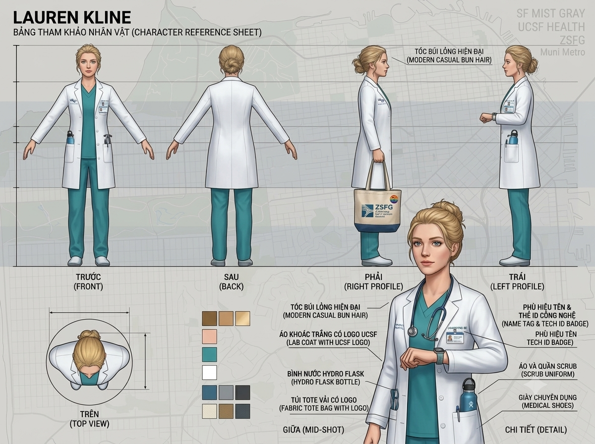
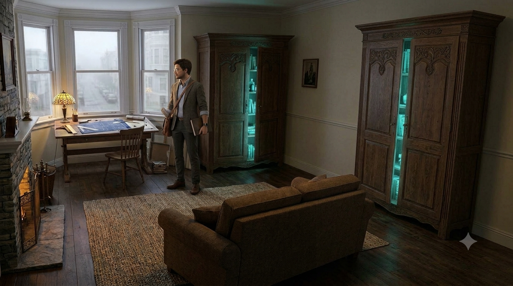
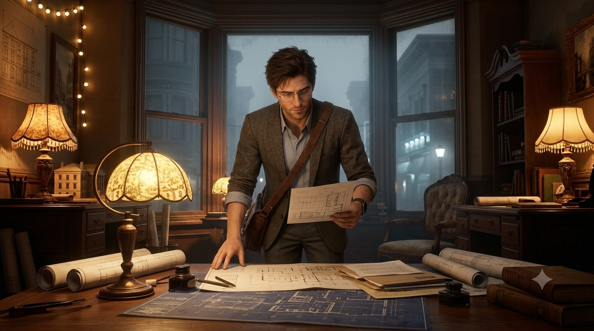
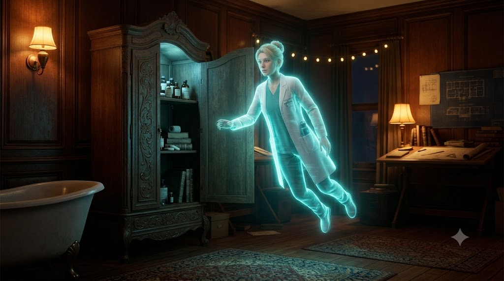

Luồng trải nghiệm của IF ONLY theo đúng cấu trúc 5 Chapter: khám phá, chuyển đổi góc nhìn, giải puzzle, mở ký ức và tiến tới lựa chọn cuối cùng.
CUỘC GẶP KỲ ẢO là một chặng riêng trong tuyến truyện, với cơ chế gameplay và mục tiêu khác nhau.

RANH GIỚI HÔN MÊ là một chặng riêng trong tuyến truyện, với cơ chế gameplay và mục tiêu khác nhau.
MẢNH GHÉP SUTTER là một chặng riêng trong tuyến truyện, với cơ chế gameplay và mục tiêu khác nhau.

HOÀNG HÔN BÌNH YÊN là một chặng riêng trong tuyến truyện, với cơ chế gameplay và mục tiêu khác nhau.

CUỘC CHẠY ĐUA 72 GIỜ là một chặng riêng trong tuyến truyện, với cơ chế gameplay và mục tiêu khác nhau.
